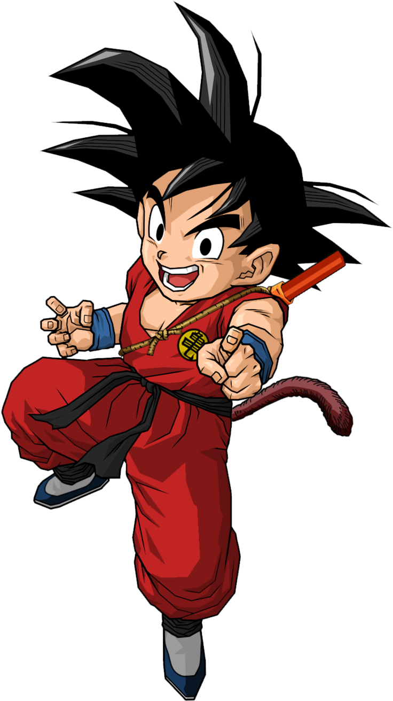

Son Goku is a fictional character and the star of the Dragon Ball manga series created by Akira Toriyama. Serving as the main protagonist of the series, he is based on Sun Wukong (known as Son Goku in Japan and Monkey King in the West), a main character in the classic Chinese novel Journey to the West (16th century), combined with influences from the Hong Kong martial arts films of Jackie Chan and Bruce Lee. Goku first made his debut in the first Dragon Ball chapter, Bulma and Son Goku, originally published in Japan's Weekly Shōnen Jump magazine on December 3, 1984.
